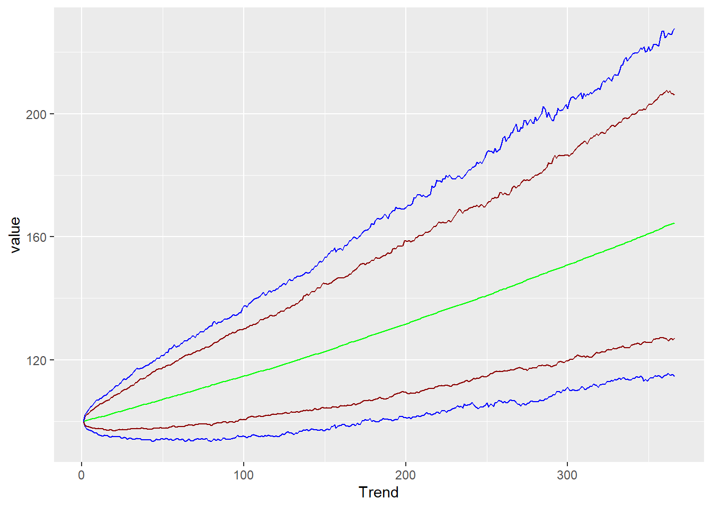
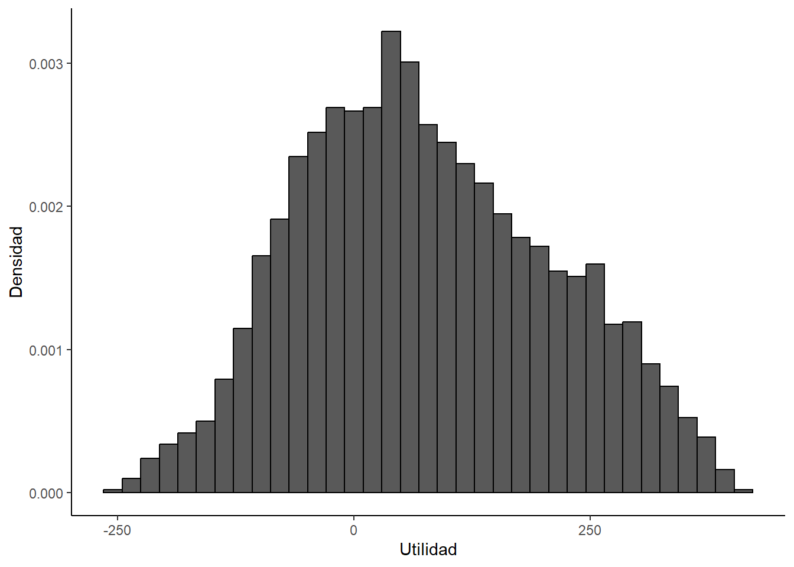

So = 100
volatilidad = 0.15
mu = 0.50
delta_t = 1 / 365
iteraciones = 1000
periodos = 365
matriz_precios = matrix(, periodos + 1, iteraciones)
matriz_precios[1, ] = So
for (i in 1:iteraciones)
for (j in 2:nrow(matriz_precios))
{matriz_precios[j, i] =
matriz_precios[j - 1, i] *
exp((mu - volatilidad ^ 2 / 2) *
delta_t +
volatilidad *
rnorm(1) *
sqrt(delta_t))
}
Finanzas en R
Finanzas en R
Simulaciones de Montecarlo
Enlaces del profesor
https://www.linkedin.com/in/sebastian-egana-santibanez/
Simulaciones
Pensemos en un activo, que desconocemos su precio futuro. Una forma de estimarlo es generar múltiples caminos que podría seguir el precio del activo en base a ciertos supuestos.
Se puede asumir que el precio de una acción sigue un paseo aleatorio, representado por un proceso Browniano geométrico como el siguiente:
\[ dS = \mu Sdt + \sigma Sdw\]
donde \(S\) corresponde al precio de un activo (por ejemplo, una acción), \(\mu\) corresponde al valor esperado de los retornos (drift) y \(\sigma\) corresponde a la volatilidad (volatility), \(dw\) es el diferencial de un proceso de Wiener, que posee las siguientes propiedades:
- \(dw = \epsilon \sqrt{dt}\), donde \(\epsilon \sim N(0,1)\)
- Los cambios de \(dw\) son independientes
En términos discretos:
\[ S_{t + 1} = S_{t} * exp((\mu - \frac{\sigma^2}{2})\Delta t + \sigma \epsilon_{t} \sqrt{\Delta t})\] Definimos los valores para un activo cualquiera, que posee un valor de 100 en el período t (hoy o en el período 0):
Calculamos las simulaciones:
drift = as_tibble(apply(matriz_precios, 1, mean))
cuantiles = as_tibble(t(apply(matriz_precios, 1, quantile,
probs = c(0.01, 0.05, 0.95, 0.99))))Graficamos:
data <- drift %>%
bind_cols(cuantiles) %>%
mutate(Trend = seq(1,366))
ggplot(data=data, aes(x=Trend)) +
geom_line(aes(y=value), color = "green") +
geom_line(aes(y=`1%`), color = "blue") +
geom_line(aes(y=`5%`), color = "darkred") +
geom_line(aes(y=`95%`), color = "darkred") +
geom_line(aes(y=`99%`), color = "blue")
Simulaciones y valoración de opciones
Black & Scholes
Para valorar opciones, se utiliza la formula de Black & Scholes:
\[ C = S * N(d_1) - X * exp (-rT) * N(d_2)\] \[ P = X * exp (-rT) * N(-d_2) - S * N(-d_1)\] donde \(C\) corresponde al precio de una opción de compra, \(P\) corresponde al precio de una opción de venta, \(X\) es el precio strike, \(S\) corresponde al precio actual del activo, \(T\) es el Time to madurity. Por otra parte:
\[ d_1 = \frac{ln(\frac{S}{X}) + (r + \frac{\sigma^2}{2})*T}{\sigma * \sqrt{T}}\] \[ d_2 = d_1 - \sigma * \sqrt{T}\] Calculamos en base a B&S:
K = 100
r = 0.02
sigma = 0.2
T = 0.5
S0 = 102
# call option
d1 <- (log(S0/K) + (r + sigma^2/2) * T)/(sigma * sqrt(T))
d2 <- d1 - sigma * sqrt(T)
phid1 <- pnorm(d1)
call_price <- S0 * phid1 - K * exp(-r * T) * pnorm(d2)
# put option
d1 <- (log(S0/K) + (r + sigma^2/2) * T)/(sigma * sqrt(T))
d2 <- d1 - sigma * sqrt(T)
phimd1 <- pnorm(-d1)
put_price <- -S0 * phimd1 + K * exp(-r * T) * pnorm(-d2)
c(call_price, put_price)[1] 7.288151 4.293135Valoramos utilizando el enfoque de simulaciones
Utilizamos la misma expresión discreta:
\[ S_{t + 1} = S_{t} * exp((\mu - \frac{\sigma^2}{2})\Delta t + \sigma \epsilon_{t} \sqrt{\Delta t})\]
# call put option monte carlo
call_put_mc<-function(nSim=1000000, tau, r, sigma, S0, K) {
Z <- rnorm(nSim, mean=0, sd=1)
WT <- sqrt(tau) * Z
ST = S0*exp((r - 0.5*sigma^2)*tau + sigma*WT)
# price and standard error of call option
simulated_call_payoffs <- exp(-r*tau)*pmax(ST-K,0)
price_call <- mean(simulated_call_payoffs)
sterr_call <- sd(simulated_call_payoffs)/sqrt(nSim)
# price and standard error of put option
simulated_put_payoffs <- exp(-r*tau)*pmax(K-ST,0)
price_put <- mean(simulated_put_payoffs)
sterr_put <- sd(simulated_put_payoffs)/sqrt(nSim)
output<-list(price_call=price_call, sterr_call=sterr_call,
price_put=price_put, sterr_put=sterr_put)
return(output)
}
set.seed(1)
results<-call_put_mc(n=1000000, tau=0.5, r=0.02, sigma=0.2, S0=102, K=100)
results$price_call
[1] 7.290738
$sterr_call
[1] 0.01013476
$price_put
[1] 4.294683
$sterr_put
[1] 0.006700902Aplicación en evaluación de proyectos
En el caso de proyectos, podemos realizar un análisis de carácter estocástico, lo que implica asumir que alguna de las variables no es conocida pero si que puede estar situada dentro de algunos parámetros.
Veamos el siguiente ejemplo:
Una empresa está evaluando la introducción de un nuevo producto y desea conocer la probabilidad que obtenga pérdidas. Para cumplir dicho propósito lo contrata a usted para construir un modelo financiero del negocio.
Después de realizar la debida investigación, usted decide construir una simulación de Monte Carlo que le permita generar la distribución de probabilidad de las utilidades del negocio, modelando separadamente los ingresos y los costos totales, considerando los siguientes elementos:
- Por el lado de los ingresos totales, se considerarán tres escenarios (A, B y C) para el precio y la cantidad, los cuales aparecen descritos en la siguiente tabla:
- En el caso de los costos totales, los costos fijos son iguales a $150 y los costos variables unitarios son constantes y son modelados usando una distribución triangular con los siguientes parámetros:
A. ¿Cuál es la probabilidad que el negocio tenga pérdidas?
library(ggplot2)
library(dplyr)
library(triangle)
#set.seed(1234567)
reps = 10000
utilidad = matrix(NA, nrow = reps, ncol = 1)
for (i in 1:reps) {
x = sample(c("A","B","C"), 1, replace = TRUE, prob = c(1/4, 1/2, 1/4))
if (x == "A") {
precio = 12
cantidad = 110
}
else if (x == "B") {
precio = 13
cantidad = 100
}
else {
precio = 16
cantidad = 80
}
costo_variable_unitario = rtriangle(1, 9, 13, 11)
costo_fijo = 150
utilidad[i] = (precio - costo_variable_unitario)*cantidad - costo_fijo
}
utilidad <- data.frame(utilidad)
ggplot(utilidad) +
geom_histogram(aes(x = utilidad, y=after_stat(density)), col="black", bins = 35) +
labs(x = "Utilidad", y = "Densidad") +
theme(
panel.background = element_blank(),
axis.line = element_line()
)
paste0("Prob(utilidad<0) = ", round(mean(utilidad$utilidad<0),2))[1] "Prob(utilidad<0) = 0.31"B. Calcule el valor esperado de las utilidades del negocio
paste0("Valor esperado utilidad = ", round(mean(utilidad$utilidad),2))[1] "Valor esperado utilidad = 76.24"Referencias:
https://www.r-bloggers.com/2020/12/pricing-of-european-options-with-monte-carlo/
https://www.r-bloggers.com/2012/11/simulating-multiple-asset-paths-in-r/
https://rpubs.com/juanrendon/VaR_montecarlo_portafolio